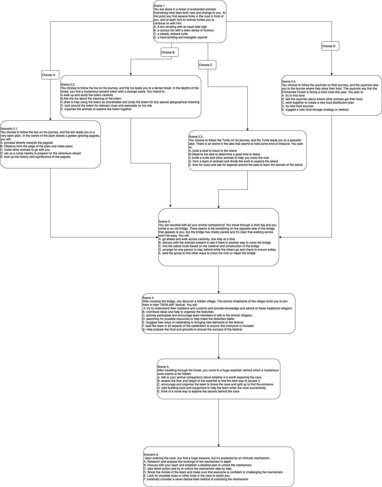

BACKGROUND
The motivations behind the development of personality tests typically encompass several key areas:
Self-awareness and personal growth:
Career and vocational planning:
Interpersonal relationships:
ADVENTURE WITH ANIMAL FRIENDS
In this immersive experience, we warmly invite you to embark on a simulated odyssey, a narrative where each character and scenario conceals subtle psychological symbolism. Through a series of choices, you will uncover your authentic aptitude within a team dynamic. Will you emerge as the guiding "Leader," the meticulous "Project Manager," the knowledgeable "Expert," the effective "Executor," the innovative "Innovator," the communicative "Communicator," or the supportive "Supporter".
ABOUT THE TEST
Overall process
Why a fairytale background
Some psychological symbols
eg. s1 & s5
CONCLUSION